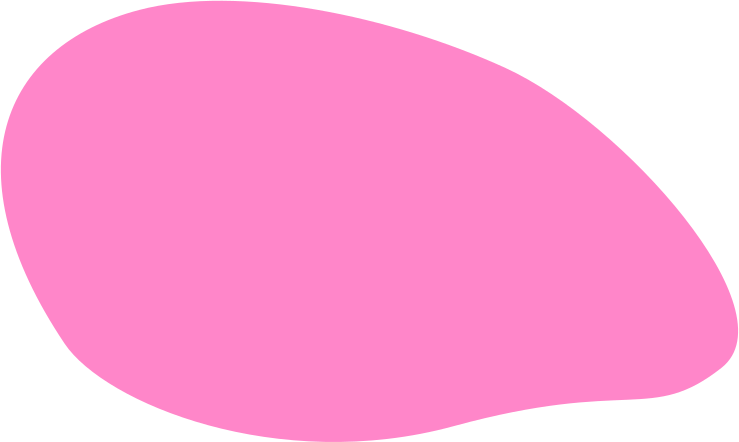

Кампания #ОбнимаяСJoonies
Чтобы обратить внимание родителей на важную роль объятий и поцелуев в развитии малыша,бренд подгузников Joonies запустил кампанию #ОбнимаяСJoonies.
Мы рассказываем родителям об основных сенсорных системах ребенка, которые активно развиваются в первые 1,5-2 года, а также продолжают развиваться в течение всей жизни.